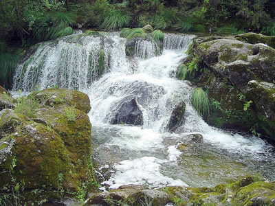

Descrição do que são Ecossistemas Aquáticos:
Os ecossistemas lóticos são definidos pela presença de água em movimento. Deste modo,
o melhor exemplo de ambiente lótico são os rios, riachos e córregos, nos quais a correnteza permanentemente desloca a água de montante (nascente) a jusante (foz de desague).
Tanto riachos pequenos com baixíssimo volume d’água quanto o Nilo ou o Amazonas, os maiores rios do mundo, são considerados ambientes lóticos.
Apesar do distúrbio constante causado pela passagem de água, a biota destes ecossistemas é rica e possui adaptações relacionadas ao volume, intensidade e variação do fluxo hídrico.
Os produtores primários principais encontrados são as algas que podem estar livres na coluna da água, aderidas a rochas na forma de biofilmes em trechos do rio em que a velocidade do fluxo de água seja menor.
Os insetos correspondem a uma grande parcela dos consumidores primários dos ecossistemas lóticos. Esses invertebrados são muito diversos e podem ocupar diversos nichos distintos: coluna d’água, rochas, enterrados no substrato do fundo do rio e até mesmo sob a superfície da água. Outros consumidores primários importantes seriam alguns moluscos, como as lesmas, e alguns crustáceos de água doce.
Exemplos deste animais são as esponjas, os corais, as anêmonas,
as estrelas-do-mar, os poliquetas, os siris e lagostas, entre tantos outros.
Muitos desses animais bentônicos se movem pelo fundo à procura de alimento,
outros vivem fixos e são por isso chamados sésseis, como é o exemplo das esponjas e dos corais.